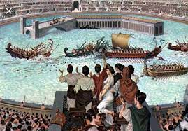

Italië
Colosseum

Het Colosseum was geheel bedoeld voor de spelen die werden georganiseerd en gefinancierd door de heersende keizer. Bij de opening organiseerde Titus spelen die 100 dagen duurden. Volgens de overlevering waren er naast veel gladiatorengevechten de meest verbazingwekkende schouwspelen te zien. Zo was er een gevecht tussen kraanvogels en een gevecht tussen vier olifanten. Negenduizend tamme en wilde dieren werden afgeslacht. Ook vrouwen traden op als wilde-dierenvechters.
Bij normale spelen in het Colosseum werden ’s morgens wilde-dierengevechten gehouden waarbij bestiarii (wilde-dierenvechters) vochten met allerlei wilde dieren in venationes (jachtpartijen). De arena werd op passende wijze ingericht met rotspartijen, struiken, e.d. Tussen de middag was er voor geïnteresseerden een pauzeprogramma waarin veroordeelde gevangenen voor de wilde dieren werden gegooid (damnatio ad bestias). Het middagprogramma met de gladiatorenshows (munera) vormde het hoogtepunt.
Kort na de opening werden volgens de overlevering ook naumachiae (zeeslagen) gehouden. Nadat men de arena met miljoenen liters water had laten vollopen, werden beroemde zeeslagen uit de geschiedenis geënsceneerd. Hoe dit precies in zijn werk ging is niet duidelijk, omdat de arena van het Colosseum te klein is voor oorlogsschepen. Men stopte hier in ieder geval mee na de verbouwing door Domitianus, toen twee verdiepingen onder de arena werden aangelegd. Andere bronnen melden dat de zeeslagen waarschijnlijk een vergissing zijn van de historicus Dio Cassius. Hij schreef in de 4e eeuw hoe 150 jaar eerder zeeslagen werden nagespeeld in een onder water gelopen arena. De zeeslagen vonden vermoedelijk plaats in de Naumachie van Augustus, een met water gevulde arena aan de overkant in Trastevere.
de opkomst van het christendom ontstond er steeds meer verzet tegen de spelen. Een enkele keizer, zoals Marcus Aurelius, was al tegen de gladiatorengevechten, maar hij kon ze door de grote populariteit onder het gewone volk niet zonder meer afschaffen. De gladiatorengevechten werden afgeschaft nadat het christendom tot staatsgodsdienst werd verheven. De christelijke keizer Honorius verbood de spelen in 404, nadat een monnik die bij een strijd tussen gladiatoren tussenbeide wilde komen, door het publiek werd gelyncht. Het Colosseum bleef hierna nog wel in gebruik voor andere voorstellingen, voornamelijk venationes, waarbij gejaagd werd op wilde dieren. De laatst bekende voorstelling werd gehouden in 523. Historici schatten dat in de loop der eeuwen tussen de 300.000 en 500.000 mensen in het Colosseum zijn gestorven.